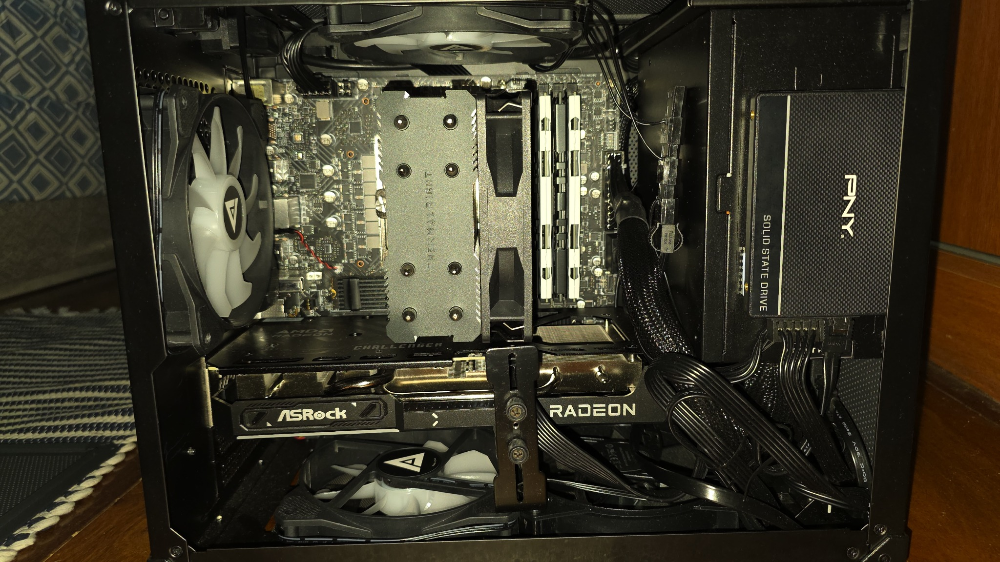
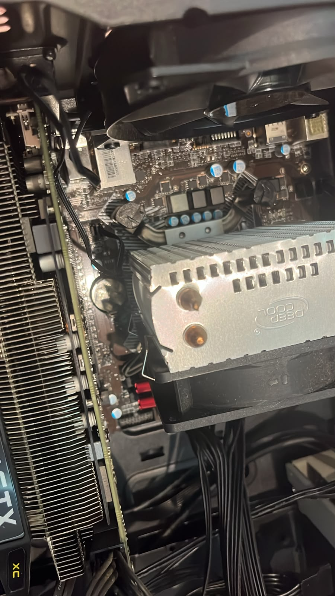

Em andamento
Desenvolvimento de Sistemas
SENAI CTTI
Início em 2025
Formação voltada a fundamentos de sistemas, lógica, tecnologia e desenvolvimento de soluções.
TECNOLOGIA · SUPORTE · INFRAESTRUTURA
Estudante de Desenvolvimento de Sistemas, com experiência prática em hardware, ambientes Linux, servidores self-hosted e atendimento ao cliente. Inglês fluente e perfil organizado, analítico e colaborativo.
01 / SOBRE MIM
Tenho interesse em entender como a tecnologia funciona — do componente físico ao sistema operacional e à infraestrutura que mantém os serviços disponíveis.
Minha experiência combina projetos pessoais de hardware e Linux com vivência internacional e atendimento ao cliente. Gosto de investigar causas, documentar processos e explicar soluções de forma clara.
Explorar meu GitHub ↗02 / FORMAÇÃO
Formação e estudos que fazem parte da minha trajetória.
SENAI CTTI
Início em 2025
Formação voltada a fundamentos de sistemas, lógica, tecnologia e desenvolvimento de soluções.
EEEFM Hilda Miranda Nascimento
Formação técnica informada
Formação técnica em Tecnologia da Informação, adicionada ao currículo conforme solicitado.
High School Diploma
Instituição de ensino nos Estados Unidos
Conclusão do ensino médio durante a vivência internacional.
Observação: não foi informado o período de conclusão do curso Técnico em TI; por isso, o site não presume datas.
03 / COMPETÊNCIAS
Áreas técnicas trabalhadas em projetos práticos e estudos.
Seleção de componentes, montagem, manutenção preventiva, fluxo de ar, curvas de ventilação e otimização térmica.
Uso e personalização de distribuições baseadas em Arch Linux, Hyprland, ferramentas de terminal e automação de rotinas.
Servidores de mídia locais, Jellyfin, organização de dados, gerenciamento de discos e infraestrutura de rede doméstica.
Atendimento ao cliente, escuta ativa, organização de processos, planejamento e resolução de conflitos.
04 / PROJETOS PRÁTICOS
Projetos pessoais que demonstram interesse por sistemas, infraestrutura e componentes de computador.
Ver perfil e repositórios no GitHub ↗Configuração de hardware com atenção à compatibilidade, organização interna, ventilação e equilíbrio térmico. As imagens mostram o equipamento e seus componentes reais.


Planejamento de servidor local com Jellyfin e armazenamento dedicado, incluindo organização e gerenciamento de dados.
Personalização de ambiente Linux, configuração de ferramentas, temas e scripts para adaptar o sistema ao fluxo de trabalho.
05 / EXPERIÊNCIA
Competências profissionais transferíveis para ambientes técnicos.
ESTADOS UNIDOS · SETOR OPERACIONAL
Prestação de serviços especializados
06 / CONTATO
Estou aberto a oportunidades em TI, suporte técnico e infraestrutura. Entre em contato ou confira meus perfis profissionais.